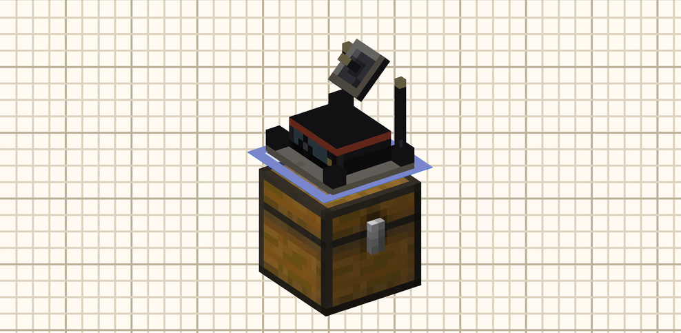
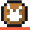
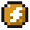
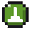
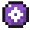
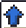
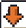
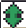
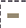
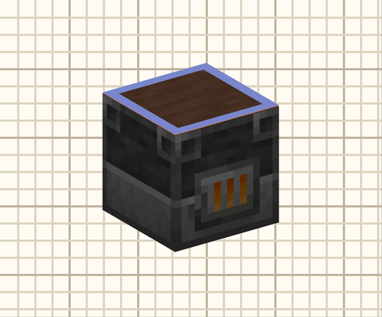

<title>Telas mais limpas</title>
<meta name="claude:viewport-fit-sides" content="cover">
<link rel="stylesheet" href="https://fonts.googleapis.com/css2?family=Chivo:wght@400;600;800&family=Chivo+Mono:wght@400;600&family=Pixelify+Sans:wght@400;600&display=swap">
<style>
/* Layout: uma coluna de leitura, com antes (captura real) e depois (mockup no visual "Porcelana e Sinal", com o visor e os ícones recortados do jogo). */
:root{
  --bg:#FBF7EF; --paper:#FFFDF8; --ink:#2A2730; --muted:#6F6879; --line:#E3D9C6;
  --coral:#E0583A; --keep:#2F9D5C;
  --mc-bg:#F2EBDD; --mc-panel:#FFFBF3; --mc-sunk:#DDD3BF; --mc-line:#BDB19A; --mc-ink:#2A2730; --mc-dim:#7A7366; --mc-faint:#B5AC9D;
  --mc-coral:#F0603E; --m-ext:#6B8FD8; --m-ins:#E08A2E; --m-sto:#2F9D5C;
  --net:#6B6FD0;
  --f-body:"Chivo",system-ui,sans-serif; --f-mono:"Chivo Mono",ui-monospace,monospace; --f-px:"Pixelify Sans","Chivo Mono",monospace;
}
@media (prefers-color-scheme: dark){:root:not([data-theme="light"]){
  --bg:#1C1A20; --paper:#26232B; --ink:#ECE5D6; --muted:#A79F90; --line:#3A3640; --coral:#F26A48; --keep:#3DB56E; color-scheme:dark}}
:root[data-theme="dark"]{--bg:#1C1A20; --paper:#26232B; --ink:#ECE5D6; --muted:#A79F90; --line:#3A3640; --coral:#F26A48; --keep:#3DB56E; color-scheme:dark}
*{box-sizing:border-box}
body{background:var(--bg);color:var(--ink);font:16px/1.6 var(--f-body);
  padding-left:max(16px,env(safe-area-inset-left,0px));padding-right:max(16px,env(safe-area-inset-right,0px));padding-block:32px 64px}
main{max-width:900px;margin:0 auto;display:flex;flex-direction:column;gap:56px}
section{display:flex;flex-direction:column;gap:16px;min-width:0}
h1,h2,h3{text-wrap:balance;line-height:1.15;margin:0}
h1{font-size:clamp(2rem,6vw,3rem);font-weight:800;letter-spacing:-.01em}
h2{font-size:1.55rem;font-weight:800}
h3{font-size:1.05rem;font-weight:600}
p{margin:0;max-width:68ch}
.eyebrow{font:600 .75rem/1 var(--f-mono);letter-spacing:.12em;text-transform:uppercase;color:var(--coral)}
.lede{font-size:1.12rem}
.muted{color:var(--muted)}
code{font-family:var(--f-mono);font-size:.84em;background:var(--paper);border:1px solid var(--line);padding:0 .3em;border-radius:3px;overflow-wrap:anywhere}
.stripe{height:4px;background:var(--coral);width:72px}
ul.tight,ol.tight{margin:0;padding-left:1.2em;display:flex;flex-direction:column;gap:6px;max-width:70ch}
.keep{display:flex;flex-wrap:wrap;gap:8px}
.keep span{border:1px solid var(--keep);color:var(--keep);padding:3px 10px;font:600 .82rem var(--f-mono);background:var(--paper)}
.weighs{display:grid;grid-template-columns:repeat(auto-fit,minmax(min(100%,250px),1fr));gap:12px}
.weighs div{background:var(--paper);border:1px solid var(--line);padding:14px 16px;display:flex;flex-direction:column;gap:4px}
.weighs b{font-weight:600}
.ba{display:flex;flex-direction:column;gap:14px}
.tag{font:600 .7rem var(--f-mono);letter-spacing:.08em;text-transform:uppercase;padding:2px 8px;border:1px solid currentColor;align-self:flex-start}
.tag.before{color:var(--muted)} .tag.after{color:var(--coral)}
figure{margin:0;display:flex;flex-direction:column;gap:8px;min-width:0}
figcaption{font-size:.85rem;color:var(--muted);max-width:70ch}
figure > img{border:1px solid var(--line);display:block;max-width:100%}
.changes{counter-reset:c;list-style:none;margin:0;padding:0;display:flex;flex-direction:column;gap:10px;max-width:72ch}
.changes li{counter-increment:c;display:grid;grid-template-columns:28px 1fr;gap:8px}
.changes li::before{content:counter(c);font:600 .8rem/1.9 var(--f-mono);color:#fff;background:var(--coral);width:22px;height:22px;text-align:center;border-radius:50%}
.changes .src{color:var(--muted);font-size:.85rem}
.refs{display:grid;grid-template-columns:repeat(auto-fit,minmax(min(100%,200px),1fr));gap:12px}
.refs div{background:var(--paper);border:1px solid var(--line);padding:14px;display:flex;flex-direction:column;gap:6px;font-size:.92rem}
.refs .file{font:400 .74rem var(--f-mono);color:var(--muted);overflow-wrap:anywhere}
.q{background:var(--paper);border:1px solid var(--line);padding:14px 16px;display:flex;flex-direction:column;gap:4px}

/* ---------- Mockups: a tela do mod ---------- */
.mcwrap{overflow-x:auto;padding:2px 0 6px}
.mc{font:13px/1.3 var(--f-px);color:var(--mc-ink);background:var(--mc-bg);border:2px solid var(--mc-ink);
  box-shadow:inset 0 4px 0 var(--mc-coral);display:flex;flex-direction:column;gap:6px;padding:10px 10px 8px;width:max-content}
.mc img{image-rendering:pixelated;display:block}
.mc-h{display:flex;align-items:center;gap:8px;white-space:nowrap}
.mc-h .t{font-weight:600;flex:1;min-width:120px}
.dim{color:var(--mc-dim)} .faint{color:var(--mc-faint)}
.pill{border:1px solid currentColor;padding:0 6px;display:inline-flex;align-items:center;gap:4px;font-size:12px}
.lens{width:8px;height:8px;border-radius:50%;background:currentColor;box-shadow:0 0 0 1.5px var(--mc-ink) inset;display:inline-block}
.slot{width:18px;height:18px;background:var(--mc-sunk);border:1px solid var(--mc-line);display:inline-block}
.moon{width:16px;height:16px;border:1.5px solid var(--mc-ink);display:grid;place-items:center;font-size:10px}
.mc-body{display:flex;gap:10px;align-items:flex-start}
.vcol{display:flex;flex-direction:column;gap:6px}
.visor{border:1px solid var(--mc-line);position:relative;background:#FFFBF3}
.visor .lbl{position:absolute;left:6px;top:5px;font-size:11px;color:var(--mc-dim)}
.inv{display:grid;grid-template-columns:repeat(9,18px);gap:1px}
.inv.hb{margin-top:3px}
.inv span{width:18px;height:18px;background:var(--mc-sunk);border:1px solid var(--mc-line)}
.panel{border-left:1px solid var(--mc-line);padding-left:10px;display:flex;flex-direction:column;gap:7px;width:290px}
.tabs{display:flex;align-items:center;gap:7px;border-bottom:1px solid var(--mc-line);padding-bottom:5px}
.tabs .on{display:flex;align-items:center;gap:4px;border:1px solid var(--mc-ink);padding:1px 4px;box-shadow:inset 0 -2px 0 var(--mc-coral)}
.tabs img{width:14px;height:14px}
.tabs .sum{margin-left:auto;font-size:12px;color:var(--mc-dim)}
.fh{display:flex;align-items:baseline;gap:6px}
.fh b{font-size:15px}
.fh span{font-size:11px;color:var(--mc-dim)}
.net{display:grid;grid-template-columns:repeat(4,1fr);gap:3px}
.fc{border:1px solid var(--mc-line);background:var(--mc-panel);font-size:11px;padding:1px 4px;display:flex;justify-content:space-between;align-items:center;height:18px;position:relative}
.fc.e{box-shadow:inset 3px 0 0 var(--m-ext)} .fc.i{box-shadow:inset 3px 0 0 var(--m-ins)}
.fc.sel{border:2px solid var(--mc-coral);font-weight:600}
.fc .nd{width:5px;height:5px;border-radius:50%;background:var(--net)}
.fc.blank{visibility:hidden}
.modes{display:grid;grid-template-columns:repeat(4,1fr);gap:3px}
.modes span{border:1px solid var(--mc-ink);display:flex;align-items:center;gap:3px;padding:1px 3px;font-size:11px;background:var(--mc-panel);min-width:0;overflow:hidden;white-space:nowrap}
.modes span.on{background:#DCE6FA;border-color:var(--m-ext)}
.modes img{width:13px;height:14px}
.kv{display:flex;align-items:center;gap:6px;font-size:12px;white-space:nowrap;min-width:0}
.kv .k{color:var(--mc-dim);width:48px;flex:none}
.box{border:1px solid var(--mc-ink);padding:0 5px;background:var(--mc-panel);display:inline-flex;align-items:center;gap:4px}
.box.dd{flex:1;justify-content:space-between;min-width:0}
.box.net{border-color:var(--net)}
.btn{border:1px solid var(--mc-ink);padding:0 6px;background:var(--mc-panel);font-size:12px}
.mini{font-size:11px;color:var(--mc-dim)}
/* lista do alcance e do Tablet */
.rl{width:230px;border:1px solid var(--mc-line);background:var(--mc-panel);display:flex;flex-direction:column}
.rr{display:flex;align-items:center;gap:6px;padding:3px 6px;font-size:12px;white-space:nowrap;border-bottom:1px solid #EFE7D8}
.rr .n{flex:1;min-width:0;overflow:hidden;text-overflow:ellipsis}
.rr.grp{background:#F6EFE1;font-weight:600}
.rr.on{box-shadow:inset 3px 0 0 var(--mc-coral);background:#FFF}
.rr .st{width:6px;height:6px;border-radius:50%;background:var(--m-sto);flex:none}
.rr .eye{width:9px;height:9px;border-radius:50%;border:1.5px solid var(--mc-ink);flex:none}
.rr.ind{padding-left:22px}
.ico{width:14px;height:14px;background:#5A5660;border:1px solid var(--mc-ink);flex:none}
.tl{width:330px;border:1px solid var(--mc-line);background:var(--mc-panel)}
.tr{display:grid;grid-template-columns:18px 1fr auto;gap:2px 8px;padding:4px 6px;border-bottom:1px solid #EFE7D8;align-items:center}
.tr .r{font-size:11px;color:var(--mc-dim);grid-column:2/4;white-space:nowrap;overflow:hidden;text-overflow:ellipsis}
.tr .r b{color:var(--mc-coral);font-weight:400}
.tr .rt{display:flex;align-items:center;gap:4px;font-size:11px}
.tr img{width:16px;height:16px;grid-row:1/3}
/* filtro */
.fl{width:300px;border:1px solid var(--mc-line);background:#EDE4D3;display:flex;flex-direction:column}
.fe{display:flex;align-items:center;gap:8px;padding:3px 6px;font-size:12px}
.fe .sw{width:16px;height:16px;flex:none}
.fe .n{flex:1}
.fe .s{font-size:11px;color:var(--mc-dim)}
.seg{display:inline-flex;border:1px solid var(--mc-ink)}
.seg span{padding:0 7px;font-size:12px}
.seg .on{background:var(--mc-ink);color:var(--mc-bg)}
</style>

<main>

<header style="display:flex;flex-direction:column;gap:14px">
  <span class="eyebrow">Estudo de interface · versão 2</span>
  <h1>Telas mais limpas</h1>
  <div class="stripe"></div>
  <p class="lede">Esta versão fica com a cara que o mod já tem e tira só o que repete ou sobra. Cada tela continua reconhecível: as mudanças são de peso, de lugar e de texto, não de estrutura.</p>
  <p class="muted">A primeira versão trocava o visor 3D e o cubo por uma grade. Saiu daqui.</p>
</header>

<section>
  <span class="eyebrow">Fica como está</span>
  <h2>A identidade não se mexe</h2>
  <div class="keep">
    <span>visor 3D da máquina</span><span>cubo das seis faces</span><span>o Olho e a cor do tier</span><span>abas com os ícones dos tipos</span><span>Extrai · Insere · Armazém · Nenhum com os ícones</span><span>bolinha da rede</span><span>porcelana, grafite e a listra coral</span><span>tema claro e escuro</span><span>telas redimensionáveis</span>
  </div>
</section>

<section>
  <span class="eyebrow">O que pesa hoje</span>
  <h2>Seis pontos de ruído</h2>
  <div class="weighs">
    <div><b>Duas formas de escolher a face, juntas.</b><span class="muted">O visor 3D já escolhe a face com um clique e pinta as faces pelo modo. O cubo ao lado faz o mesmo, em tamanho grande.</span></div>
    <div><b>Frase fixa explicando o modo.</b><span class="muted">"Takes from the machine through this face…" ocupa duas linhas o tempo todo e é lida uma vez.</span></div>
    <div><b>Tudo com o mesmo peso.</b><span class="muted">As seis faces têm contorno tracejado, todo controle tem borda preta. O olho não sabe onde começar.</span></div>
    <div><b>Cartões de filtro longe do Filtro.</b><span class="muted">Os slots ficam embaixo do visor, com um rótulo próprio, e o "Filtro: Editar" fica do outro lado.</span></div>
    <div><b>Linhas altas nas listas.</b><span class="muted">No alcance, cada máquina usa duas linhas (número e coordenadas). No Tablet, a segunda linha corta em "…".</span></div>
    <div><b>Três linhas de controles antes da lista no Filtro.</b><span class="muted">Lista branca, lista negra, Componentes, a contagem e a busca vêm antes da primeira entrada.</span></div>
  </div>
</section>

<section>
  <span class="eyebrow">1 · Roteador</span>
  <h2>A mesma tela, com hierarquia</h2>
  <div class="ba">
    <span class="tag before">Hoje</span>
    <figure></figure>
    <span class="tag after">Refinada</span>
    <figure>
      <div class="mcwrap"><div class="mc" role="img" aria-label="Mockup da tela do roteador refinada">
        <div class="mc-h"><span class="t">Ore Input</span><span class="dim" style="font-size:12px">30 items/s</span><span class="pill" style="color:#6E7480"><span class="lens"></span><span style="color:var(--mc-ink)">Basic</span></span><span class="slot"></span><span class="slot"></span><span class="moon">☾</span></div>
        <div class="mc-body">
          <div class="vcol">
            <div class="visor"><span class="lbl">Top</span></div>
            <div><div class="inv"><span></span><span></span><span></span><span></span><span></span><span></span><span></span><span></span><span></span><span></span><span></span><span></span><span></span><span></span><span></span><span></span><span></span><span></span><span></span><span></span><span></span><span></span><span></span><span></span><span></span><span></span><span></span></div>
            <div class="inv hb"><span></span><span></span><span></span><span></span><span></span><span></span><span></span><span></span><span></span></div></div>
          </div>
          <div class="panel">
            <div class="tabs"><span class="on">Items</span><span class="sum">1 network</span></div>
            <div class="fh"><b>Top</b><span>27 slots · router here</span></div>
            <div class="net">
              <span class="fc blank"></span><span class="fc sel e">Top<i class="nd"></i></span><span class="fc blank"></span><span class="fc blank"></span>
              <span class="fc">Left</span><span class="fc">Front</span><span class="fc">Right</span><span class="fc">Back</span>
              <span class="fc blank"></span><span class="fc i">Bottom<i class="nd"></i></span><span class="fc blank"></span><span class="fc blank"></span>
            </div>
            <div class="modes"><span class="on">Extract</span><span>Insert</span><span>Storage</span><span>None</span></div>
            <div class="kv"><span class="k">Network</span><span class="box dd net"><span><span class="lens" style="color:var(--net);width:7px;height:7px"></span> Smelting Line</span><span>▾</span></span></div>
            <div class="kv"><span class="k">Filter</span><span>Passes all</span><span class="slot" style="width:16px;height:16px;margin-left:auto"></span><span class="slot" style="width:16px;height:16px"></span><span class="btn">Edit</span></div>
            <div class="kv"><span class="k">Prior.</span><span class="btn">−</span><span>0</span><span class="btn">+</span><span class="box dd" style="margin-left:4px"><span>Redstone: Ignore</span><span>▾</span></span></div>
          </div>
        </div>
      </div></div>
      <figcaption>Mesmo arranjo: visor à esquerda, painel à direita, inventário embaixo. O painel ficou com metade da altura e o visor com mais espaço.</figcaption>
    </figure>
  </div>
  <ol class="changes">
    <li><div><b>O visor 3D é quem escolhe a face.</b> Ele já faz isso hoje; ganha só o nome da face no canto. <span class="src">(sem mudança de código no visor)</span></div></li>
    <li><div><b>O cubo encolhe e fica calmo.</b> Mesmo desenho desdobrado, em células de 18 px. Contorno tracejado sai; o modo aparece como uma tarja colorida na borda da célula, a rede como a bolinha, e só a face escolhida tem o contorno coral. Serve para ver as seis de uma vez e para clicar numa face que o visor esconde.</div></li>
    <li><div><b>A face escolhida vira título.</b> "Top" maior, e "27 slots · router here" em cinza ao lado. É o que diz ao jogador o que ele está editando.</div></li>
    <li><div><b>A frase do modo vai para a dica</b> dos botões Extract, Insert, Storage e None, com um pequeno atraso para não piscar. <span class="src">(Logistics Network: dica com 1 s de atraso)</span></div></li>
    <li><div><b>Os cartões de filtro vão para a linha do Filtro</b>, entre "Passes all" e Edit. Sai o rótulo "Filter cards for the Top face" e a linha de baixo do visor.</div></li>
    <li><div><b>Menos borda preta.</b> Rótulos sem caixa e em cinza (Network, Filter, Prior.), caixa só no que se clica. O coral fica só na face escolhida e na aba aberta.</div></li>
  </ol>
</section>

<section>
  <span class="eyebrow">2 · Alcance</span>
  <h2>Uma máquina por linha</h2>
  <div class="ba">
    <span class="tag before">Hoje</span>
    <figure></figure>
    <span class="tag after">Refinada · a lista</span>
    <figure>
      <div class="mcwrap"><div class="mc" role="img" aria-label="Mockup da lista de máquinas do alcance com uma linha por máquina">
        <div class="mc-h"><span class="t">Kitchen &amp; Forge</span><span class="dim" style="font-size:12px">Machines 10/16</span></div>
        <div class="mc-body">
          <div class="rl">
            <div class="rr"><span class="ico" style="background:#8E6A3A"></span><span class="n">Attached machine</span><span class="mini">chest</span></div>
            <div class="rr grp on"><span>▾</span><span class="ico"></span><span class="n">Blast Furnace ×5</span><span class="mini" style="font-weight:400">profile</span></div>
            <div class="rr ind"><span class="st"></span><span class="n">#1</span><span class="mini">3 bl.</span><span class="eye"></span></div>
            <div class="rr ind"><span class="st"></span><span class="n">#2</span><span class="mini">3 bl.</span><span class="eye"></span></div>
            <div class="rr ind"><span class="st"></span><span class="n">#3 · exception</span><span class="mini">3 bl.</span><span class="eye"></span></div>
            <div class="rr ind"><span class="st"></span><span class="n">#4</span><span class="mini">3 bl.</span><span class="eye"></span></div>
            <div class="rr ind"><span class="st"></span><span class="n">#5</span><span class="mini">3 bl.</span><span class="eye"></span></div>
            <div class="rr grp"><span>▸</span><span class="ico"></span><span class="n">Smoker ×5</span><span class="mini" style="font-weight:400">profile</span></div>
            <div class="rr grp" style="border-bottom:0"><span>▸</span><span class="ico"></span><span class="n">Furnace ×4</span><span class="mini" style="font-weight:400">profile</span></div>
          </div>
          <div class="visor"><span class="lbl">Top · #1</span></div>
        </div>
      </div></div>
      <figcaption>No espaço onde hoje cabem um grupo e cinco máquinas, cabem três grupos. O visor e o painel ficam iguais.</figcaption>
    </figure>
  </div>
  <ol class="changes">
    <li><div><b>Uma linha por máquina:</b> estado, número, distância e o Olho. As coordenadas vão para a dica da linha.</div></li>
    <li><div><b>"all on profile" sai da linha do grupo.</b> Só aparece algo quando há exceção: a palavra "exception" na máquina.</div></li>
    <li><div><b>O nome do grupo leva o ícone do bloco</b> e o recolher ▸/▾ fica à esquerda, como numa árvore. <span class="src">(Logistics Network: grupos com [+]/[−] na central)</span></div></li>
  </ol>
</section>

<section>
  <span class="eyebrow">3 · Tablet</span>
  <h2>A segunda linha diz uma coisa só</h2>
  <div class="ba">
    <span class="tag before">Hoje</span>
    <figure></figure>
    <span class="tag after">Refinada · as linhas</span>
    <figure>
      <div class="mcwrap"><div class="mc" role="img" aria-label="Mockup das linhas da Lista do Tablet">
        <div class="tl">
          <div class="tr"><span class="ico" style="grid-row:1/3;width:16px;height:16px;background:#D59A1E"></span><span>Advanced Router</span><span class="rt"><span class="pill" style="color:#D59A1E;font-size:11px">Advanced</span></span><span class="r">Block of Gold · Tier Hall</span></div>
          <div class="tr"><span class="ico" style="grid-row:1/3;width:16px;height:16px;background:#6E7480"></span><span>Furnace 1</span><span class="rt"><span class="pill" style="color:#6E7480;font-size:11px">Basic</span></span><span class="r">Furnace · <b>destination full</b></span></div>
          <div class="tr"><span class="ico" style="grid-row:1/3;width:16px;height:16px;background:#D59A1E"></span><span>Base Battery</span><span class="rt"><span class="pill" style="color:#D59A1E;font-size:11px">Advanced</span></span><span class="r">Wireless Battery · Storage · 1.2k FE/t</span></div>
          <div class="tr" style="border-bottom:0"><span class="ico" style="grid-row:1/3;width:16px;height:16px;background:#1FA9A0"></span><span>Kitchen &amp; Forge</span><span class="rt"><span class="pill" style="color:#1FA9A0;font-size:11px">Elite</span></span><span class="r">Chest · 10 machines</span></div>
        </div>
      </div></div>
      <figcaption>O ícone, o nome e a pílula do tier ficam. A grade de quadradinhos das faces sai da linha (ela repete o painel) e a segunda linha nunca corta.</figcaption>
    </figure>
  </div>
  <ol class="changes">
    <li><div><b>Segunda linha com até três partes, por prioridade:</b> a máquina presa, depois um problema (em coral) ou a vazão quando move, depois a rede. Sem "attached:" na frente; o que não cabe sai inteiro, não pela metade.</div></li>
    <li><div><b>A grade das faces sai da linha.</b> O estado das faces já aparece no painel ao escolher o nó, e o problema já aparece em palavra.</div></li>
    <li><div><b>"Select" vira Shift + clique</b> na linha, com a barra de Selecionar aparecendo só quando há algo marcado. O botão fixo sai.</div></li>
  </ol>
</section>

<section>
  <span class="eyebrow">4 · Filtro</span>
  <h2>A lista começa mais cedo</h2>
  <div class="ba">
    <span class="tag before">Hoje</span>
    <figure></figure>
    <span class="tag after">Refinada · o topo e a lista</span>
    <figure>
      <div class="mcwrap"><div class="mc" role="img" aria-label="Mockup do topo e da lista da tela de filtro">
        <div class="mc-h"><span class="t">Filter <span class="dim" style="font-weight:400;font-size:12px">· Up · Items</span></span><span class="seg"><span class="on">Whitelist</span><span>Blacklist</span></span><span class="btn">Back</span><span class="moon">☾</span></div>
        <div class="search" style="border:1px solid var(--mc-line);background:var(--mc-panel);padding:1px 6px;font-size:12px;color:var(--mc-faint);width:300px">Search: name, #tag, @mod</div>
        <div class="fl">
          <div class="fe"><span class="sw" style="background:#2E5E3C"></span><span class="n">#c:ores</span><span class="s">tag · 36</span></div>
          <div class="fe" style="background:#FFFBF3"><span class="sw" style="background:#C8A58A"></span><span class="n">Raw Iron</span></div>
          <div class="fe"><span class="sw" style="background:#E6B62E"></span><span class="n">Raw Gold</span></div>
          <div class="fe"><span class="sw" style="background:#B76A4A"></span><span class="n">Raw Copper</span></div>
          <div class="fe"><span class="sw" style="background:#5A3A30"></span><span class="n">Ancient Debris</span><span class="s" style="color:var(--mc-coral)">≥ 16</span></div>
        </div>
      </div></div>
      <figcaption>Whitelist e Blacklist num seletor só no cabeçalho; "Components" vai para a aba More; o título "Entries · 5" e a dica "Shift + click here…" saem. As abas Entry, Tags, Rule e More e o inventário ficam.</figcaption>
    </figure>
  </div>
  <ol class="changes">
    <li><div><b>Item exato numa linha só.</b> "Exact item" embaixo de cada item sai; só tag, mod e regra dizem o que são, porque são os diferentes.</div></li>
    <li><div><b>Lista branca e negra viram um seletor de duas partes</b> no cabeçalho, ao lado do Back. <span class="src">(Pipez: um botão que troca)</span></div></li>
    <li><div><b>A contagem vai para a busca</b> ("Search 5 entries…") e a dica de arrastar vai para a dica do inventário.</div></li>
  </ol>
</section>

<section>
  <span class="eyebrow">De onde veio cada ideia</span>
  <h2>O que trouxe dos outros mods</h2>
  <div class="refs">
    <div><b>XNet</b><span class="file">GuiController.java · ItemConnectorSettings.createGui</span><span>Uma linha por conector, com o lado numa letra e o resto na dica. Aqui, uma linha por máquina no alcance.</span></div>
    <div><b>Logistics Network</b><span class="file">NodeEditorScreen.java · ComputerScreen.java</span><span>Explicação na dica com atraso (<code>TOOLTIP_DELAY = 1000L</code>), rótulo em cinza e cor só no valor, grupos com [+]/[−] e linhas de uma linha.</span></div>
    <div><b>Pipez</b><span class="file">ExtractScreen.java</span><span>Um controle que troca de estado no lugar de dois botões, como Whitelist/Blacklist.</span></div>
    <div><b>Flux Networks</b><span class="file">GuiTab*.java</span><span>O que a tela edita como título, bem visível. Aqui, a face escolhida.</span></div>
  </div>
</section>

<section>
  <span class="eyebrow">Custo</span>
  <h2>Nada fica mais pesado</h2>
  <ul class="tight">
    <li>Nenhum pacote novo e nenhum dado novo: tudo já vem no snapshot da tela e no da página do Tablet.</li>
    <li>O cubo menor e as linhas de uma linha desenham menos texto por quadro; o visor 3D continua igual.</li>
    <li>Os cartões mudam só de posição no menu, sem slot novo.</li>
    <li>O e2e já tira as capturas dessas telas; o antes e depois sai dele, como no roteiro da skill de telas.</li>
  </ul>
</section>

<section>
  <span class="eyebrow">Para você decidir</span>
  <h2>Duas perguntas</h2>
  <div class="q"><b>1. O cubo menor (células de 18 px) ainda está bom de clicar?</b><span class="muted">Se preferir, ele fica do tamanho de hoje e só perde o tracejado e a frase do modo.</span></div>
  <div class="q"><b>2. Tirar a grade de quadradinhos das linhas do Tablet?</b><span class="muted">Ela mostra as faces de cada nó sem abrir o painel. A alternativa é deixá-la só nas linhas com problema.</span></div>
</section>

<footer class="muted" style="font-size:.85rem;border-top:1px solid var(--line);padding-top:16px">
  Capturas atuais: <code>docs/curseforge/</code>. Visor e ícones dos mockups recortados delas. Código lido: XNet (1.21_neo), Logistics Network (1.21.1), Pipez (master), Flux Networks (1.20). 21 de outubro de 2026.
</footer>
</main>
